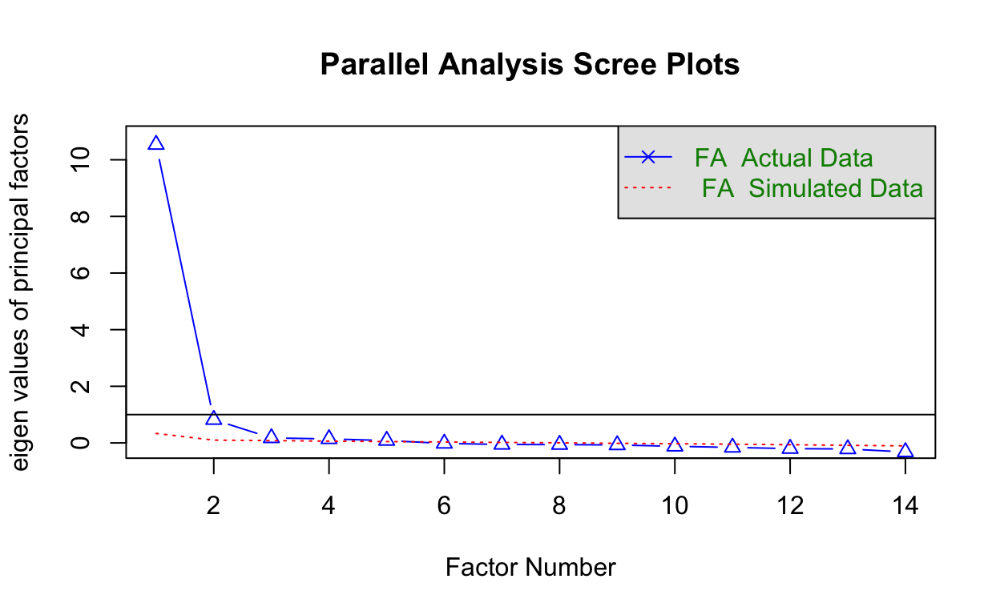
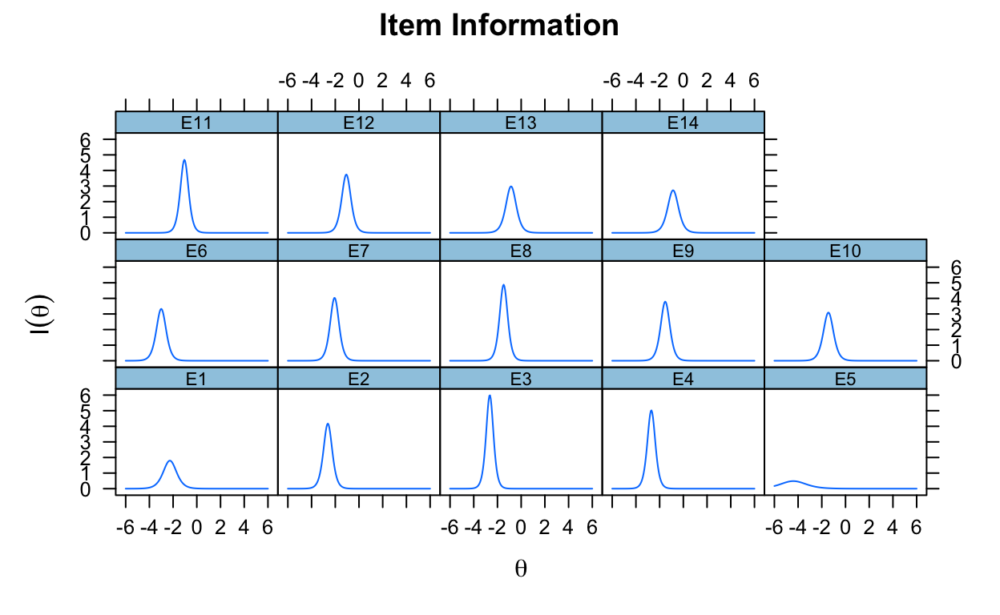
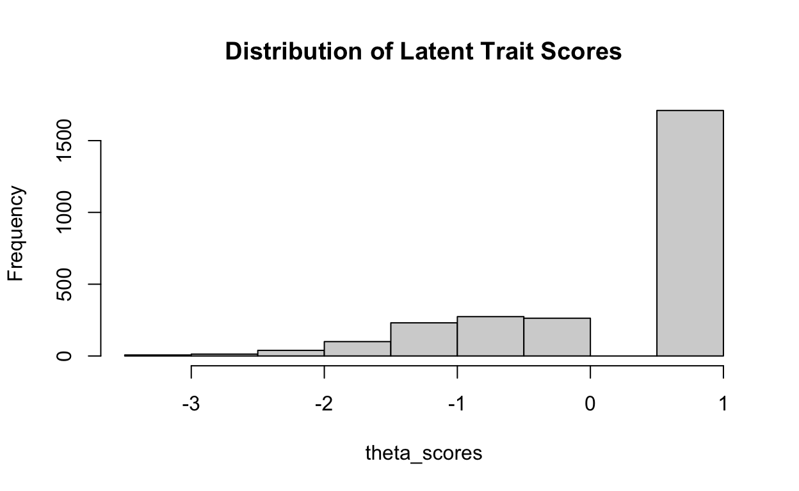
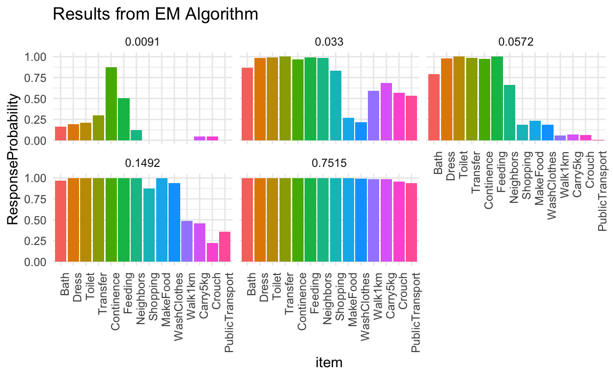

“All models are wrong, but some are useful” - George Box
Latent variables are constructs (things/concepts) that we can not observe directly, but we believe influence our observed data that we collect. Depression is a latent variable that we cannot assess directly, but we hope that a questionnaire like PHQ-9 or Beck’s Depression Inventory are proxies that are able to effectively capture depression. The items that we use are assumed to have measurement error because we cannot 100% perfectly capture the latent variable (otherwise it wouldn’t be latent anymore..).
Because we can’t directly see the latent variable, there are different forms that it can take on. Depending on the theorized form of the latent variable, researchers will typically work with a subset of models in hopes of distinguishing individuals on this latent variable. The latent variable can be thought of as continuous, taking on a quantity that can be used to rank order and quantitatively compare individuals against one another. Factor analysis or Item Response Theory (IRT) are models that assume the latent variable is continuous, and both aim to describe the underlying structure of a set of observed variables given the latent variable.
On the other hand, discrete latent variable models like Latent Class Analysis (LCA) or Latent Profile Analysis (LPA) assume that individuals are divided into discrete subgroups based on the latent variable, with qualitative differences between groups rather than quantitative. We wouldn’t say that individuals in one group score higher on the latent variable compared to another. Latent class analysis has been used in PTSD, depression, and eating disorder research to uncover groups where individuals exhbit different patterns of behavior from one another, but are not theorized to be less or more severe than other groups.
Methods that assume a discrete latent variable or a continuous latent variable can both be used to investigate heterogeneity in a sample and to characterize individuals. The question I’ve been grappling with is, how do you know which type of model to use? There is no test or method to determine whether your latent variable is discrete or continuous. Rather, the form of the latent variable is assumed from theory or previous research, and the choice of model will follow. While most researchers just conduct analysis assuming one framework, I’m curious to see what I can learn if I use both continous and discrete latent variable methods on the same dataset. What kind of conclusions can I make, and do conclusions from continuous vs discrete latent variable models contradict or overlap with one another?
An area that I’ve been interested in during my time in graduate school is gerontology and healthy aging. One component that is essential for healthy aging is independent physical functioning. Activities of Daily Living (ADL) are a set of items developed by Katz in 1950 that are used to assess which basic activities, like getting dressed or bathing, that adults are able to complete without assistance. ADLs have been used to identify elders with severe mobility issues, and have also been used as predictors of mental wellbeing and mortality. Instrumental Activities of Daily Living (IADLs) are similar to ADLs but encompass more complex activities like taking public transportation or managing finances, and may be measures of cognitive functioning on top of physical functioning. There have been both discrete latent variable methods, as well as continous variable methods used to assess functional ability, with results supporting both models. My goal is to take a stab at both different types of methods myself and write up summaries so I can compare and contrast the two. For continuous latent variable methods I will use both EFA and IRT, and for discrete variable I will use LCA.
The dataset that I will be using to carry out my latent variable investigation is the Chinese Longitudinal Healthy Longevity Survey, a national study that assesses quality of life and health status of adults 65 years and older across 22 provinces in China. The goal of the study is to evaluate which biological, social, and environmental factors contribute to longevity and successful aging, and currently has 9 waves spanning from 1998 to 2021. I am interested in indicators related to functional anility. There are 6 items related to ADL: bathing, dressing, toilet, transfer, continence, and feeding. Additionally, there are 8 IADL items: visiting neighbors, shopping, cooking, doing laundry, walking 1km, lift a 5kg weight, crouching/standing, and taking public transportation. For these 14 items participants can respond as either being able to complete the activity independently, able to complete with assistance, or unable to complete. For the purposes of the analysis, ADL and IADL items will be dichotomized so that those who require any assistance will be grouped into one category. I will be using data from the 2005 wave of the study, and for the sake of analysis I will only include elders who have complete data on all of the ADL/IADL items, for a total sample size of 2,637.
The goal of EFA is to find the underlying factor structure that explains the correlation between observed items in a dataset. The factor loadings give information about the strength of the relationship between the factor and the item. Based on these factor loadings we can estimate individuals’ factor scores, tell us where they fall along the latent variable continuum. The factor scores can be used in regression or other methods compare various groups on this latent trait.
To begin, we must construct a correlation matrix of the items in our dataset. Because these items are all dichotomous, a tetrachoric correlation needs to be estimated before doing EFA. It estimates the Pearson correlation assuming that the binary items are actually coarse approximations of normally distributed latent variable.
Call: tetrachoric(x = dt)
tetrachoric correlation
E1 E2 E3 E4 E5 E6 E7 E8 E9 E10
E1 1.00
E2 0.85 1.00
E3 0.89 0.94 1.00
E4 0.87 0.91 0.95 1.00
E5 0.53 0.48 0.61 0.60 1.00
E6 0.85 0.93 0.93 0.86 0.67 1.00
E7 0.77 0.85 0.86 0.83 0.58 0.85 1.00
E8 0.77 0.83 0.81 0.83 0.41 0.79 0.90 1.00
E9 0.77 0.84 0.81 0.83 0.47 0.79 0.87 0.85 1.00
E10 0.74 0.80 0.82 0.78 0.53 0.78 0.80 0.82 0.93 1.00
E11 0.69 0.78 0.76 0.76 0.37 0.70 0.82 0.85 0.78 0.77
E12 0.64 0.65 0.76 0.75 0.37 0.62 0.76 0.78 0.74 0.77
E13 0.63 0.63 0.65 0.70 0.35 0.56 0.70 0.76 0.70 0.71
E14 0.67 0.74 0.72 0.71 0.24 0.65 0.82 0.84 0.75 0.72
E11 E12 E13 E14
E11 1.00
E12 0.86 1.00
E13 0.83 0.86 1.00
E14 0.80 0.80 0.81 1.00
with tau of
E1 E2 E3 E4 E5 E6 E7 E8 E9 E10 E11
-1.88 -2.35 -2.41 -2.43 -2.53 -2.58 -1.89 -1.39 -1.40 -1.30 -0.97
E12 E13 E14
-0.98 -0.76 -0.77 After checking that the ADL/IADL were well correlated with one another, we used common factor analysis with weighted least squares estimation (due to prescence of categorical items). In order to determine the number of factors to estimate I used parallel analysis, which simulates a random dataset with the same number of variables as the existing dataset and extracts eigenvalues. The number of eigenvalues of the existing dataset that are larger than the eigenvalues extracted from the simulated dataset is the number of factors to be estimated.

Parallel analysis suggests that the number of factors = 5 and the number of components = NA
Call: fa.parallel(x = rr$rho, n.obs = nrow(dt), fa = "fa")
Parallel analysis suggests that the number of factors = 5 and the number of components = NA
Eigen Values of
eigen values of factors
[1] 10.54 0.82 0.18 0.14 0.08 -0.02 -0.05 -0.06 -0.07 -0.12 -0.16
[12] -0.20 -0.21 -0.32
eigen values of simulated factors
[1] 0.33 0.10 0.08 0.06 0.05 0.03 0.02 0.00 -0.01 -0.03 -0.05
[12] -0.06 -0.09 -0.10
eigen values of components
[1] 10.76 1.18 0.57 0.37 0.29 0.21 0.17 0.14 0.13 0.09 0.06
[12] 0.03 0.00 0.00
eigen values of simulated components
[1] NABased on parallel analysis I fit a EFA model with 5 factors, along with oblim rotation, a method that allows factors to be correlated with one another and loadings with a more ideal structure. By ideal structure, I mean items that have high factor loadings on only one factor and low loadings on other, allowing for easier interpretation of the factors. For example, say that I fit 2 factors to my set of 14 ADL/IADL items. Perhaps all of my ADL items (feeding, dressing, continence, etc) have high factor loadings on factor 1 and small factor loadings on factor 2. Additionally, my IADL items do the opposite: they have high factor loadings on factor 2 rather than factor 1. This would make interpretation of the factors easier, as we could say that factor 1 represents basic or essential functioning while factor 2 represents more advanced physical functioning. If the continence item had a high factor loading on both factor 1 and 2, it would be less clear on how we would interpret and distinguish these two factors.
Loadings:
WLS1 WLS2 WLS3 WLS4 WLS5
E1 0.813 0.131
E2 0.883 0.115
E3 0.872 0.136
E4 0.871 0.117
E5 0.450 0.473
E6 0.808 0.205
E7 0.881
E8 0.900
E9 0.872
E10 0.856
E11 0.881 -0.136
E12 0.856 -0.166
E13 0.821 -0.193
E14 0.855 -0.194
WLS1 WLS2 WLS3 WLS4 WLS5
SS loadings 9.808 0.456 0.000 0.000 0.000
Proportion Var 0.701 0.033 0.000 0.000 0.000
Cumulative Var 0.701 0.733 0.733 0.733 0.733While the results from parallel analysis suggest 5 factors, looking at the loadings and proportion of variance explained tells a different story. Factors 2-5 do not have any items with high factor loadings, and the amount of variance among the items that they explain is incredibly low compared to factor 1. Based on these results I decided to restimate the model with only 1 factor instead of 5.
Loadings:
WLS1
E1 0.844
E2 0.910
E3 0.904
E4 0.898
E5 0.562
E6 0.856
E7 0.890
E8 0.885
E9 0.873
E10 0.860
E11 0.848
E12 0.816
E13 0.775
E14 0.809
WLS1
SS loadings 9.929
Proportion Var 0.709The results from an EFA model with only one factor estimated show that all 14 ADL/IADL items load onto a single factor. This supports one theory that ADL and IADL items are unidimensional based on this dataset.
The goal of IRT is to model participants’ probability of responding to a set of items as a function of a hypothesized latent trait. Similar to EFA, we are able to estimate each participant’s latent trait value along a continum and use that value for further comparison and analysis. A core characteristic of IRT is that the model also estimates item parameters that describe the item regardless of the sample used. The parameters depend on the specific IRT model chosen, but could include item difficulty, item discrimination, and guessing parameters. Item difficulty refers to the latent trait needed to have a 50% chance of answering the item correctly (or in non-education settings, the probability of endorsing the item). Items that require a higher latent trait value in order to have that 50% chance have higher difficulty. Item discrimination is a quantity that refers to how well the item differentiates people with similar latent trait values. It can be thought of as a slope. The steeper the slope is, or the larger the item discrimination value is, there’s a higher chance of endorsing the item with every small increment of the latent trait. Guessing parameters are more common in education settings where students may have a chance of randomly selecting the correct answer (like in multiple choice tests) rather than actually being proficient in the latent trait, so this parameter accounts for that possibility.
IRT is an incredibly useful tool to not only assess the individuals in the sample, but to learn about the characteristics and quality of the items. It is desirable to have items that range in difficulty and have high discrimination so that the survey or assessment overall can assess people with high, low, and inbetween values on the latent continum. This is random but there’s a quote in a fundamental IRT book that I really like: “Researchers should spend more time investigating their scales than investigating with their scales.” Using IRT models to evaluate measures is super important because establishing validity is absolutely essential before interpreting results. Oftentimes researchers are eager to use their tools right away without stopping to check if their tools are sharp enough!
Because we have some earlier knowledge from fitting the EFA model that these set of ADL/IADL items may be unidimensional, we will fit an IRT model that assumes unidimensionality. There is a 1PL model which only estimates difficulty parameters, which is often the first model that is fit. After fitting the 1PL model I fit a 2PL model which also estimates discrimination parameters. Since this 2PL model was a significantly better fit to the data, I will only discuss the results of the 2PL model. Overall, the fit of the 2PL on this set of 14 ADL/IADL items was generally satisfactory after evaluating some fit statistics. The Root Mean Squared Error of Approximation (RMSEA) was .04, which is below the .05 threshold of adequate fit commonly used in research. In addition, the Comparative Fit Index (CFI) was .99, above the well-known criteria of .95. These fit statistics never guarantee fit or that the best model is chosen, but provide evidence to support its continued use and interpretation of its parameters.
a b g u
E1 2.682206 -2.2727847 0 1
E2 4.086769 -2.6274767 0 1
E3 4.901545 -2.6476169 0 1
E4 4.485009 -2.7009171 0 1
E5 1.394256 -4.4036514 0 1
E6 3.649285 -3.0013932 0 1
E7 4.019452 -2.0609180 0 1
E8 4.417876 -1.4785459 0 1
E9 3.896057 -1.5269327 0 1
E10 3.517278 -1.4424198 0 1
E11 4.328125 -1.0458542 0 1
E12 3.869158 -1.0694429 0 1
E13 3.453457 -0.8526636 0 1
E14 3.305270 -0.8660019 0 1The table above shows the discrimination (a) and difficulty (b) estimates for this dataset. The least difficult item is continence, whether one is able to use the restroom without assistance. One does not need to be on the high end of this latent trait spectrum, in this case the latent trait being functional ability, in order to have a 50% chance of being able to independently do this item. This estimate tracks with general gerontology research which shows that loss of continence is usually the last functional limitation that occurs and usually signals severe health decline. Other low difficulty items are feeding and getting dressed. On the other hand, the most difficult items are being able to crouch and stand 3 times as well as taking public transportation. Individuals need to have higher functional ability in order to have a higher probability of being able to do this activity.

The figure above shows information curves for each of the 14 items. These information curves let us know how informative these items are at different values of the latent trait, represented by theta. The higher the peak, the more information this item provides for people who are at that theta level. Both the item discrimination and the item difficulty are used to construct these information curves, and one can see that different items provide information for different values of the latent trait. For example, E5 (continence) provides the most information for people who are low on functional ability. This makes sense intuitively if you think about the fact that people with higher functional ability are all able to use the bathroom independently, so this item is not able to distinguish people who are past a certain threshold of basic functional ability. On the other hand, E14 (using public transportation) provides the most information for people who have higher functional ability. People with low functional ability who struggle to use the bathroom or get dressed are all going to be not able to use public transportation, so this item is not very helpful at differentiating people with a lower range of functional ability.
item S_X2 df.S_X2 RMSEA.S_X2 p.S_X2
1 E1 7.737 8 0.000 0.460
2 E2 1.258 2 0.000 0.533
3 E3 6.709 2 0.030 0.035
4 E4 1.984 2 0.000 0.371
5 E5 5.710 7 0.000 0.574
6 E6 2.807 1 0.026 0.094
7 E7 7.342 6 0.009 0.290
8 E8 19.749 6 0.029 0.003
9 E9 4.483 6 0.000 0.612
10 E10 7.652 6 0.010 0.265
11 E11 4.594 4 0.008 0.332
12 E12 4.776 5 0.000 0.444
13 E13 21.265 5 0.035 0.001
14 E14 14.664 5 0.027 0.012While the overall model of fit is adequate, it is also possible to run item-level fit statistics to identify items that are not performing as expected based on the model and that could be reviewed. Large S-\(\chi^2\) values with significant values indicate items that deviate significantly from the 2PL model. In this example we have two poor-fitting items using a .05 threshold: Toileting and shopping independently. If one was using IRT for scale development and to add/remove items, it is recommended to review these item fit statistics and do further analysis to investigate whether these two items should be excluded or not. Since my focus here is not scale development I will not proceed with any further adjustments.

Lastly, I want to turn our focus on the person parameters. Based on the estimated item parameter values, we can also estimate latent trait scores for each person in the dataset. The graph above shows the distribution of theta scores for this sample of older Chinese adults. Overall, most adults in the sample have relatively higher functional ability, while there are a smaller subset that vary in terms of severity of functional disability. The actual numerical value of the theta scores should not be interpreted, but can be used to compare comparisons within the sample. This distribution aligns with the sample characteristics, as these older adults have been sampled from the general population and excludes institutionalized older adults who may have severe functional limitations.
Overall, using IRT on this data shed some light about which items are informative for describing individuals that are located on different parts of the functional ability variable. While we obtain more information about our items compared to EFA, this is more of a secondary step after EFA rather than a competing model during step 1 of data exploration. In order to fit the 1PL and 2PL IRT models, the assumption of unidimensionality must be justified. Results from our EFA where we allowed for the possibility of multiple factors to explain the correlation of our items indicated that one factor was sufficient for explaining our data, so thus I decided to fit these IRT models. The distribution of latent trait scores from both EFA and the 2PL model were very similar. My analysis here stops short but a next step I could take is to use these latent trait scores as a predictor for some type of outcome. In the context of aging it could be a useful predictor of depression and mental wellbeing (although the direction of this model is kind of undetermined because mental wellbeing could also predict functional ability too..). I don’t do gerontology research or have any strong hypotheses so I will just stop here and move on to the discrete variable case: latent class models!
First introduced by Paul Lazarsfeld in 1950, latent class analysis (LCA) is a statistical method used to relate a set of observed indicators to a latent variable by identifying underlying and unobserved subgroups within a population. The latent variable is discrete and consists of 2 or more mutually-exclusive subgroups, also known as classes, that individuals belong to. Individuals in each class are assumed to be homogeneous and have the same item response probabilities, which is the probability of endorsing a particular response for an item given class membership. In addition, the model also includes latent class prevalences, which represent the proportion of individuals in the sample that are members of a class.
In order to select the number of classes that best describe the sample, several fit statistics as well as examining the interpretability of the solution can be considered. In this analysis I decided to use AIC and BIC, which are fit statistics that are calculated based on considering the likelihood value of the model and the number of parameters and/or sample size. Based on these, the 5 class model fit the data the best, and the solution is shown below.

There are 5 different bar graphs, each indicating the estimated parameter values for a specific class. The 14 bars represent the item response probabilities given membership in that class. The decimal value above each graph is the latent class prevalence: the proportion of individuals in the sample that are estimated to belong to this class. The largest class is the class in the bottom middle, with 75% of the sample being estimated to be part of this class. Individuals in this class have a high probability of being able to independently do each of the activities. We could label this class “no functional limitations”. The next class on the left with a prevalence of 15% captures individuals who are able to do all ADL activities, but struggle with more physically intensive IADL activities of walking 1 kilometre, carrying 5kg, crouching, and taking public transportation. The class on the top right with a prevalence of 5% describes individuals who are able to do ADLs but no IADLs other than visiting neighbors. The top middle class with a prevalence of 3% describes individuals who can do all ADLs and IADLs besides making food and washing clothes. Lastly, the smallest class with only 1% prevalence describe individuals who only have continence (the ability to use the bathroom independently).
These classes tell an interesting story about potential different groups of Chinese elders, but raise questions as well. Normally, these estimated classes can be used in further analysis to determine what factors increase likelihood of being a member of each of the classes. I would hypothesize that males are more likely to be in the latent class with difficulties making food or washing clothes compared to females. This might not be because males actually struggle more, but that because of societal structures they typically did not do those tasks in the first place, not because of their functional ability. This hypothesis warrants further investigating. I would also hypothesize that older adults (90+) are more likely to be in the class with the most severe limitations compared to younger older adults. Further analysis is needed, but the final solution illustrated here shows the heterogeneity in functional ability in this sample of almost 3,000 adults.
This was a great excercise for me to practice going through all of the steps of fitting each of these three models and writing up some takeaways from the models, but I’m still not 100% satisfied. It was interesting to see agreement between IRT and EFA that these ADL/IADL items are unidimensional, and that estimated latent trait abilities were quite similar as well. The IRT model was a lot more informative in identifying which items were difficult and better able to distinguish individuals based on functional ability. On the other, the classes from the latent class model do not support unidimensionality at all. Rather than having 5 classes where each one has a few less items that individuals can independently do, these 5 classes represent 5 qualitatively distinct subgroups that differ on the combination of ADL/IADLs they can perform independently. Three classes were different combinations of IADLs that individuals could complete along with one class with severe functional limitation and one class with no functional limitation.
The only overlap that I could see between these two methods is that a dominant group of individuals with no functional limitations was identified in both continous and discrete latent variable methods. The other groups produced by the latent class model are not identified in the continuous latent variable models. Ultimately, thisexercise reinforced how different modeling approaches can yield different insights depending on the assumptions they make about the underlying structure of the data. It would be interesting to examine hybrid discrete/continous latent variable models such as factor mixture models and what kind of story it can tell.
Thanks for reading!